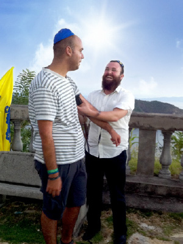

Nicaragua Wants Moshiach!
The first Chabad House in Nicaragua in Central America opened three years ago. The shluchim, R’ Dovid Attar and his wife have established a veritable lighthouse, which sends forth the wellsprings of Chassidus and the Besuras Ha’Geula in the picturesque town of S. Juan del Sur. • Preparing the world for Geula.

“Until not too many years ago, S. Juan del Sur was a quiet fishing town,” says R’ Dovid Attar, shliach to the area. “In recent years though, the town has changed and hotels and attractions for tourists have multiplied.
“For many tourists, the town is a place to relax for a few days before trekking in the volcanic mountains, or continuing their trip elsewhere. We are their home away from home.”
Thousands of Israeli tourists and other Jews visit the town every year. R’ Attar estimates there are about 20,000 of them. Until three years ago there was no Chabad activity in the area. R’ Dovid Attar then decided to join the shlichus revolution taking place in tourist towns across South and Central America. Together with his wife, they have created a wonderful place which includes a shul, a kosher restaurant, catering, Shabbos and Yom Tov meals, shiurim, and lots of one-on-one time spent with tourists.
“The Chabad House is the only shul in all of Nicaragua. Although in a nearby town there is a tiny Jewish community that up until two years ago was led by a Reform rabbi, since he died we have adopted the eight families. Every few weeks we give shiurim there. Many of them are coming closer to Judaism. Some of them even committed to kashrus and order meat and chicken from us.”
WE CAME TO NICARAGUA WITH NOTHING
R’ Attar says that even before he married, he intended on going on shlichus.
“Right after the year on K’vutza, I spent time in Chabad Houses in Central and South America. In recent years, the number of Israelis touring these areas has doubled and tripled, which created the need to ramp up the Chabad outreach in these countries.
“After two years of working in other Chabad Houses, we began looking for a place of our own. There still remained other countries, Nicaragua and Panama [where there is a shliach in Panama City for the local Jewish community], about which tourists complained that there is no place for them to stay. After getting the Rebbe’s bracha, we went to fill the void.”
R’ Attar investigated and discovered that most of the tourists are concentrated in S. Juan del Sur.
“We arrived in Nicaragua with nothing but emuna and plenty of drive. Exactly three years ago, we announced the opening of a Chabad House here.”
The shluchim did not wait until they found a suitable building. They immediately began to operate from the narrow room which they rented in a hotel.
“Later on we spent time looking for a building, but it wasn’t easy. There aren’t many buildings in this town. In addition, in recent years, European and American businessmen have been coming, and they rent every available structure. What made things even harder is that we were not fluent in Spanish so it was very hard to express what we wanted.”
The shluchim wrote to the Rebbe about being frustrated with the situation and asked for help. They had gone through the entire town and had found nothing suitable to their needs.
A week went by and then the miracle occurred. One of the brokers showed them a spacious building with two floors that was just right. They signed a contract and the Chabad House officially opened its doors.
They started with a shul, then a kosher kitchen, restaurant and catering services.
“Just recently we signed a contract with Ohr Ha’Torah, a frum organization that flies frum people here for vacation a few times a year. We supply them with kosher food. Also, many businessmen who eat kosher come from nearby Panama and enjoy the food from our kosher kitchen.”
The shliach himself shechts chickens every few weeks. Many Jews benefit from his sh’chita, in addition to the tourists and visitors to the Chabad House. Every few weeks he goes to a nearby village to take care of chalav Yisroel. The Chabad House is the home of every tourist. They enjoy a hot drink, a good meal, and are given a sheet of discounts that the shluchim get for them from the hotels in town.
“We have shiurim and regular t’fillos. At every Shabbos meal there are moving moments. One of the most moving things is when you see a tourist, who just learned about t’fillin or some other mitzva, explaining to other tourists how to do it.”
STANDING ON PRINCIPLE
In recent months, the Chabad House got its own Torah scroll. “Up until a few months ago, we had to borrow Sifrei Torah from various places. There were also times when, unfortunately, we had minyanim without a Torah. We did not even dream of raising the money needed to buy a new Torah, because every penny is needed for the daily budget.
“Before last Pesach, I went on a short fundraising trip in Panama City. Running a Chabad House on Pesach is enormously expensive, and since I had already made connections with wealthy Jews in Panama, I decided to raise money there. Besides for my usual fundraising, I was hoping to find a donor for a Torah. I went with the Rebbe’s bracha and the trip was successful. I raised enough money to cover all of Pesach.
“At a certain point I also thought of trying to interest the wealthy men in dedicating sections in a Torah scroll, and in that way ultimately being able to buy a Torah, but I wasn’t successful in this. People had already donated s’farim to other places and only gave to the daily Chabad House expenses. I did not give up, but whenever I met someone I spoke about our need for a Torah until I heard about a very wealthy man, someone who has businesses throughout South America. I heard that he was within the year of mourning for his father. Through a friend, I established contact and he agreed to meet with me.
“I arrived at his office, in a thirty-seven story building that he owns. At the entrance I was met by security guards who escorted me to him. He was happy to meet with me and seemed interested in buying a Torah, but with a condition. ‘If you accept the condition, I will transfer the entire sum to you.’ His condition was that whenever we read from the Torah, that we make a ‘Mi Sh’Beirach’ for the Israeli soldiers and for the welfare of the State. I thought about it; the offer was extremely tempting.
“I told him I would be happy to make a ‘Mi Sh’Beirach’ for the IDF soldiers, but for the State I had a problem. He wasn’t pleased with this and he said he would follow up to make sure I was abiding by his condition. I told him that I would ask my mashpia and we arranged to meet the next day at the same time. My mashpia said I could not agree to his condition. ‘The Rebbe will send you a Torah some other way,’ he said.
“The next day, I went to his office and informed him that it was a condition I could not abide by. I explained that we love Eretz Yisroel but not the leadership of the State, and since I wasn’t operating as a private person but was on the Rebbe’s shlichus, I could not concede on the Rebbe’s principals. We said goodbye and I returned to my place of shlichus. Afterward he gave me a nice sum of money for our activities over Pesach, but not for a Torah.
“That summer, a young religious American fellow came to Nicaragua. He loved surfing and was happy to hear about the opening of a Chabad House. He spent all his time with us. On Shabbos, immediately after Shacharis we went on to Musaf, which greatly surprised him. He asked me what happened to the Torah reading, and I explained that unfortunately we still did not have a Torah.
“He was horrified and that Motzaei Shabbos he called his father, a businessman in Miami, who wanted to give a $2000 donation towards a Seifer Torah. ‘Thank you for the donation,’ I said, ‘but where will I get the rest of the money?’ The father, who had gotten caught up in the son’s enthusiasm, promised to do all he could to see to it that the shul did not remain without a Torah scroll.
“His father got his friends involved in the project until he raised the full amount for a beautiful Torah. A few months later, his son called me with the news, ‘We bought a Torah for you, but since my father is busy at work and I already started law school, there is nobody who can bring it to you.’
“I was thrilled with the news. I arranged for one of the bachurim to meet with them in Miami and take the Torah. By the following Shabbos, we had the Torah reading at the shul.
“For me, it was a lesson in emuna and about standing on principle. The Rebbe runs the show. A Torah did not come from Panama, but it came a few months later from Miami. The words of my mashpia rang in my ears; that the Rebbe runs everything and he would make sure we would get a Torah from somewhere else.”
AND THERE WAS LIGHT
According to R’ Attar, all the successes of the Chabad House are a series of amazing Hashgacha Pratis. This was the case last Purim:
“We started getting ready a few weeks in advance. We decorated the Chabad House and brought a Megilla from Crown Heights. We prepared hamantashen, graggers, and costumes and took care of all the details that would make the Yom Tov a joyous one. Erev Purim we hung up flyers around town inviting Jews to celebrate with us at the Chabad House.
“But then things began to happen that threw a wrench into the works. Mere hours before the end of Taanis Esther, a truck belonging to the local electric company parked near the Chabad House. They took out ladders and workers informed us that they had come to cut off the electricity. I was beside myself in shock. I pay my bill every month, what was this about?! I knew that if they cut the wires, it would take three days for them to reconnect them. Unlike Eretz Yisroel or Western countries, in Nicaragua they disconnect the electricity by actually cutting the wires.
“We showed the supervisor the papers that said we paid what we owed, but he showed us a letter from a few years earlier that said that the previous tenants had not paid their electric bill. We tried to use our connections, but to no avail. They only agreed to postpone the disconnect by two hours. ‘If you pay we won’t cut it off,’ they said.
“The debt amounted to several thousand dollars which we could not pay. They did their work and cut the electricity. So we had no electricity, nor the music we had arranged, but we had a successful event by the light of candles. All the Israelis who attended had a great time.
“We were still left with the electricity problem. When days went by and we saw there was nothing we could do, we were feeling down. The refrigerator did not work, nor the oven. We had no Internet connection, no phone and – the most basic thing of all – we had no electric light.
“We spoke to a lawyer, and even she said that if it was the electric company we were dealing with, there was little she could do. I wrote to the Rebbe and asked for a bracha. The answer surprised us. The Rebbe said a Jew needs to be an illuminating candle and must always be in a position of increasing the light. How would we do this? I asked myself. We had no light! But the Rebbe’s bracha encouraged me greatly. I decided that since this is a mosad of the Rebbe’s, I would do what I could and the Rebbe would do the rest.
“The tourists had come up with a joke about us by then that the Chabad House had turned into a cave of tzaddikim on the road to Tzfas. We continued doing all our work, albeit without electricity.
“One day, I met a lawyer who identified himself as a Ben Noach. He is a member of a local group who grows beards and keeps the mitzvos. I did not think he could help us, but I told him what the electric company had done to us. He exclaimed, ‘I will help you!’
“I was skeptical. So many people had made promises and nothing had changed. What were the chances that he could help? That day, at six in the evening, I heard the honking of a truck parked near the Chabad House. I went outside and saw the same electric company people setting up ladders. ‘What do you want now?’ I asked them. I was sure that since I hadn’t paid the old bill that they had come back to take away the electric pole. How pleasantly surprised I was to hear them say they had come to reconnect the electricity.
“The next day, I found out what happened. That lawyer used to be the manager at the local electric company. Right after I spoke to him, he went to his replacement and told him that if he did not immediately restore our electricity, he would blow the whistle about crimes that both of them knew that the man did. The new manager was frightened and promised to arrange things.”
A FABULOUS PESACH
Going back to Pesach, R’ Attar told us this amazing story:
“At a certain point we found out that Pesach night there would be hundreds of Jews in town who wanted to celebrate with us. I knew that our Chabad House was not big enough for them all and that we needed a commercial kitchen for all the cooking and logistical preparations. We looked for a restaurant or hall that would agree to rent the place to us for a week.
“We soon realized this was impossible since the week of Pesach coincided with their holiday. People from all of Nicaragua were planning on coming to our town each day to celebrate till the wee hours of the night. What restaurant would want to forgo the tremendous profits they could make during this week? We even went to a nearby town and went from one restaurant to the next, but we were turned down there too.
“We spent two days going around town, for nothing. Some wanted to hear a few details, but when they realized what we intended to do with their restaurant, they refused. Pesach was approaching and we did not have a proper place that was big enough. We were out of ideas even as we knew that many Jews relied on us and we could not disappoint them.
“In that town there was another exclusive restaurant with a nice bar and a big area that could contain everyone. We did not go there at first, because we were sure they would not agree to rent it out or they would ask for a fortune to close it and let us kasher it. At this point, when we had no more options, we decided to approach them even though we did not hold out high hopes.
“As soon as we stood in the doorway, the manager ran over to us and asked, ‘Are you Jews?’
“We said we were and he asked, ‘Are you Chabadnikim?’ We were flabbergasted by this question. How did he know what that was? We sat down to talk and before we said anything, he said that in his youth he had worked in Miami and he knew Jews and Chabad Chassidim. After he finished telling us his experiences, we told him what we were looking for. He asked detailed questions about what we would be doing and said he would think about it. In the meantime, we continued talking. We saw that he was happy to talk to us; it seemed we had brought back good memories for him. At two in the morning, before we parted, we shook hands and he suddenly said, ‘You know what? The restaurant is yours. Do what you like with it.’
“We were stunned. At first we thought he was joking, but when we asked him if he was sure, he gave us his handshake. We signed a contract with him at a laughable price that we hadn’t dreamed was possible. Not only that, he said, ‘For the cooking, I will give you the new kitchen on the second floor,’ and he took us on a tour. It was a new kitchen that had never been used, which made it so much easier for us.
“If that wasn’t enough, he recommended a chef who was an expert on Jewish food, a good friend of his who had even worked in Chabad Houses in Miami. We accepted his recommendation and got even more than we expected. In addition to his knowledge of Pesach food, he was an expert in the customs of Pesach. He knew about cooking without spices. When any utensil fell on the floor, he said it should be set aside. We couldn’t get over it! It was a fabulous Pesach. Hundreds of Israelis gathered Pesach night and the days that followed with joy and true freedom.”
RESULTS DOWN THE ROAD
The outreach work at the Chabad House is extensive. It sometimes seems as though the shluchim have become experts at grand events. However, if you asked R’ Attar, you would hear that he derives the greatest satisfaction from one on one conversations with Israeli tourists or Jewish visitors.
“A few months ago, a tourist came in and said this was the first Chabad House she was walking into. ‘I’ve been traveling for six months already but I had no interest in anything Jewish.’
“My wife and I invited her to sit down and relax. She said that she planned on doing her trip with Australian gentiles and not with Israelis whom she despised. Then she asked what the Torah’s view is on marriage with a non-Jew. She asked while making it clear that the Torah’s view would have no bearing on her opinion. We told her about the special quality of a Jew and shared some stories to illustrate this idea and that was the end of that conversation.
“Two days later, we went out to buy vegetables and fruits and met her eating at a cafe. When she saw us, she ran over. ‘Chabadnikim, what’s up? I must say the HaGomel bracha. How do I do it, and where?’
“She told us that she had gotten a sign from Heaven that made her split up with her gentile Australian boyfriend. When she had left the Chabad House, she went to a local cafe where she sat with him. After a while, she got up to get something. At just that moment, bullets shot out of the security guard’s gun, which hit the back of the chair she had been sitting on. ‘If I had continued sitting there, I would have been killed,’ she said with tears in her eyes. Of course, we guided her in how to say the bracha.
“Three months later, Israelis whom we met in another town gave us a message from her – that since we met, she was very strong in Torah and mitzvos as a result of what happened.”
Here is another story:
“Last year, a pair of Israelis walked into the Chabad House who were very interested in Judaism. For a long time, we learned Tanya and Shulchan Aruch with them. Since they were planning to marry, we taught them the laws that pertain to marriage. Before they left, they wrote to the Rebbe through the Igros Kodesh. The woman opened to a letter about observing family purity and her fiancé opened to a similar answer. In both their answers the message was to spread light.
“When I was visiting in Eretz Yisroel, I received an invitation to their wedding. You have to understand that neither of them was religious. How surprised I was to hear the Dalet Bravos playing as they walked to the chuppa. When I walked over to the chuppa, I couldn’t believe my eyes. There was a screen with a video of the Rebbe for the guests to see. That is when the woman told me she works as a music editor on one of the radio stations in Tel Aviv and she includes Chabad niggunim in her broadcasts as much as she can.”
REACHING OUT FURTHER
During their first year, the outreach work focused primarily on Israeli tourists. But lately, they have formed good ties with the local Jewish community.
“We have an ongoing shiur in Halacha and Chassidus. They are very happy with the attention and warmth they get from us and we are happy with the Jewish pride that we are able to instill in them with each encounter.
“We also have a good rapport with American Jews who came here and opened businesses or Jews who are in the surfing club. Many people who escaped the noise of the city settled here.
“In the hours before the onset of Sukkos, I decided to go down to the Chabad House and make sure that everything was ready with the chairs in place and the sukka clean. I saw that all was well, that our employees had set everything up. I planned on going back upstairs in order to supervise the cooking and final preparations when I suddenly noticed some dirt out of the corner of my eyes.
“I took a broom and began sweeping. As I stood there, I noticed two older men standing facing the entrance of the sukka. I could tell they were westerners. ‘Do you know what a sukka is?’ I asked them, and they said they did. ‘Are you Jewish?’ I asked, and they said yes. I took them into the sukka and we sat down to a long conversation. I explained the holiday to them and invited them to be our guests for Yom Tov. They happily accepted. Thanks to them, we had a minyan on Yom Tov night.
“Later on, we got better acquainted and we learned that they lived locally. One of them, an architect by profession, works in Nicaragua for a company that builds buildings. We asked him to build our mikva and he happily agreed. He and his friend became regulars at the Chabad House, all thanks to my deciding to sweep the sukka so it would be perfectly clean.
“There is another mekurav, the manager of a yoga retreat in the town. He is a Jewish guy from Philadelphia who settled here and, sadly, married a local gentile woman. One day, he came to the Chabad House and poured out his heart about his poor relationship with his wife. We are used to speaking more about the positive than the negative and we spoke about strengthening his identity as a Jew through observing mitzvos.
“Interestingly, before this, we had no idea he was Jewish. But when you spread light and the wellsprings, Jewish sparks come to life.”
LAST MOMENTS
BEFORE GEULA
Chabad in S. Juan del Sur, Nicaragua wants Moshiach! You can see it on all the flyers and signs, like the sign in the entrance to the Chabad House.
“A Chassid has no doubts about doing Mivtza T’fillin or Mivtza Mezuza; all the more so regarding the main mivtza of them all – Moshiach.
“Among the people we encounter there are two types: one is excited by the stories and very much relates to the idea of Moshiach; the other, few in number, are skeptical. The latter are comprised mainly of religious people who went off the derech. So we open s’farim and delve into the subject.
“We recently had someone visit the Chabad House who wanted to study the inyan of Moshiach. After we spoke at length, he said, ‘Thanks to you, now I am at least a believer in the Creator of the world.’”
Plans for the future, as long as the Geula isn’t fully here and the Beis HaMikdash is not yet built, is to light up their corner of the world with the light of Geula.
“This year, we plan on starting the building of a mikva. We have managed to interest the few Jewish families who live nearby. They willingly agreed to be involved in the construction, and particularly in maintaining the place. When I presented the plans, it seems that in the past there was a mikva and shul in Nicaragua, but during the civil war the government confiscated the place and sold it to the highest bidder. Now we are working to restore what was.”
Nosson Avrohom. "Nicaragua Wants Moshiach!." Beis Moshiach, no. 916 (February 19, 2014).